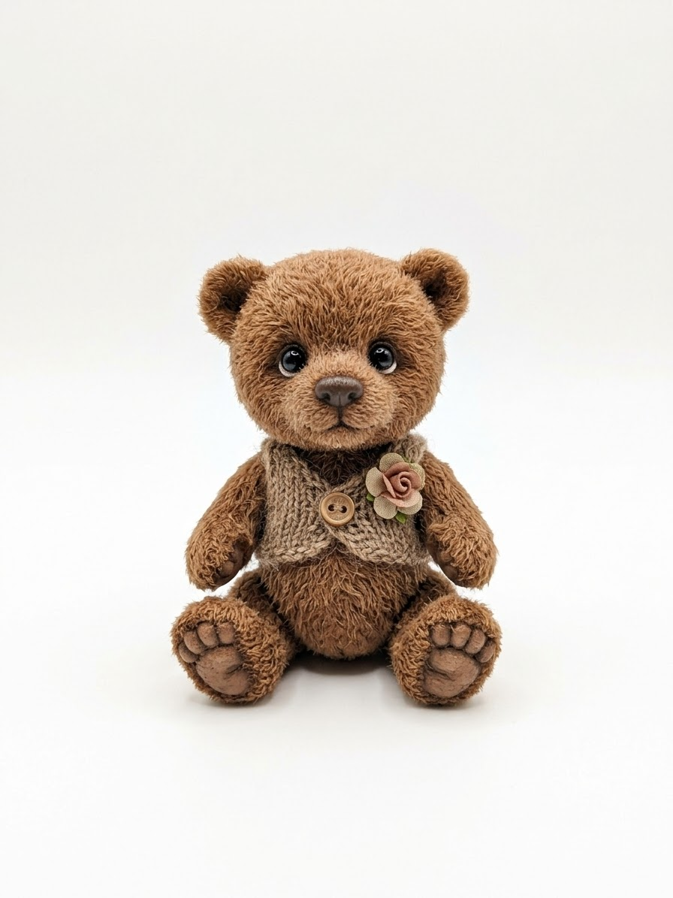
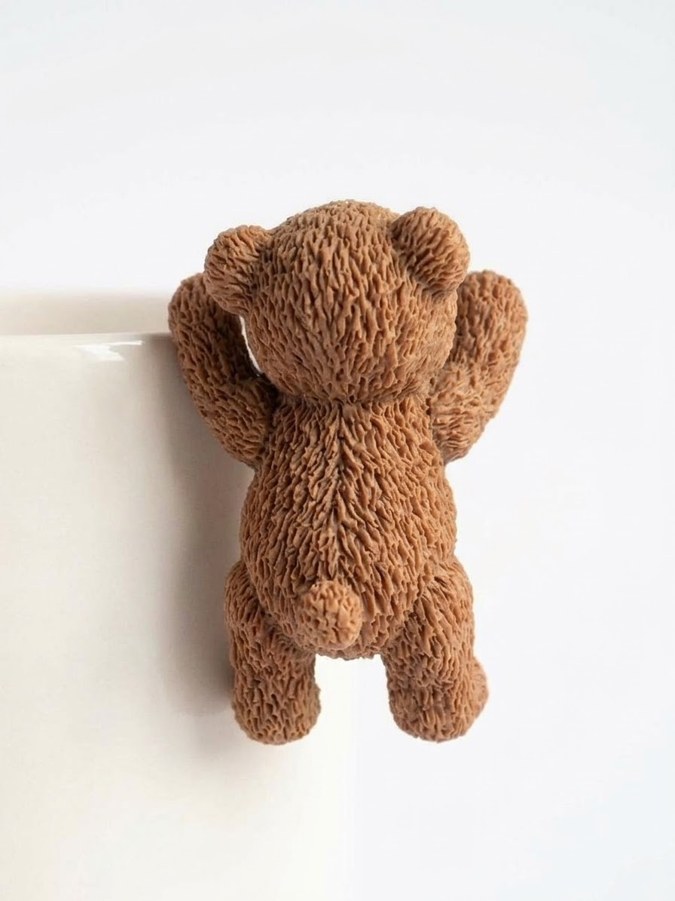

Quiet Moon Bears: model sheet
Turnaround drawings for the 3D bears. He is drawn from the photo: same face, proportions, fur and vest. She is designed from him.
Reference photos


He: the boy bear
She: the girl bear
Together
Specs for the 3D model
| He | She | |
|---|---|---|
| Height (sitting, ear tip to floor) | 1.00 | 0.93 of his height |
| Head | Very large: 45% of the height. Wider than tall (1.34 : 1), full cheeks lower down | Same shape, 4% rounder |
| Ears | Small, round, high at "10 and 2 o'clock". Dark cupped inside, fur on the back | Same, 5% smaller. Rose by her right ear |
| Eyes | Glossy black, thin grey-brown ring. Wide apart (0.7 of head width), halfway down the head | 10% bigger, three lashes at the outer corner |
| Snout and nose | Short, soft snout with shorter fur. Rounded triangle nose, dark brown, glossy. Stitched "Y" mouth | Smaller nose in rosy brown. Pink blush on the cheeks |
| Body | Chubby pear shape, sits with legs straight out and soles facing forward. Short arms at the sides | Same, a little narrower |
| Feet | Big oval soles. Smooth tan pad (looks like suede or clay) and 4 toe beans | Same, rosy tan |
| Tail | Small round fur ball, low on the back | Same |
| Fur | Medium-long shaggy mohair, clumps falling slightly down. Darker at the roots, lighter tips | Same length, softer and a little curlier |
| Clothes | Oatmeal cable-knit vest, one wooden button on the left, small dusty-pink rose on his left chest | Dusty-rose knit vest, cream pearl button, the same rose at her ear |
| Colours | fur #a8754c fur shadow #6a4026 pads #a47b5c nose #4a3226 vest #a08167 |
fur #c79464 fur shadow #8a5a36 pads #c3907c nose #6a3f34 vest #c99a98 |